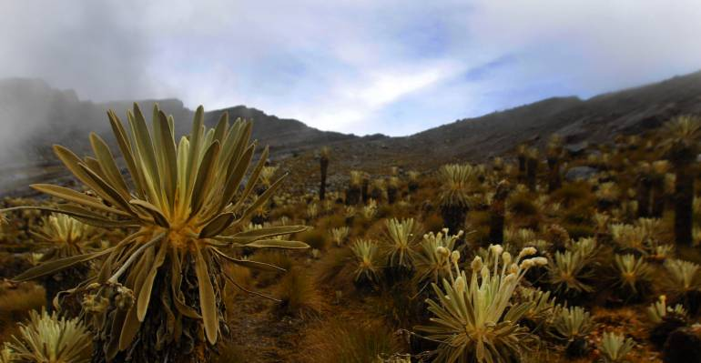
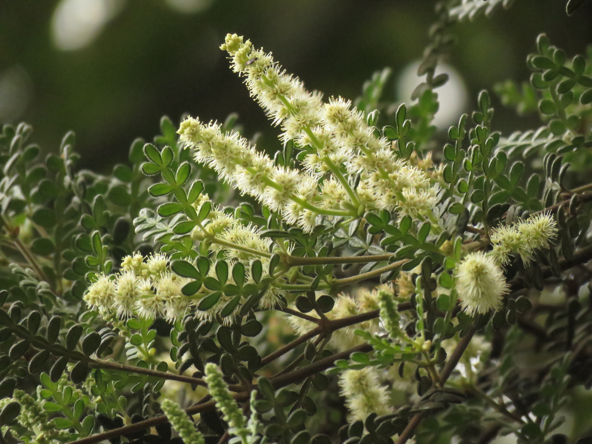
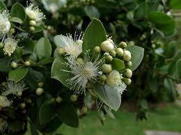
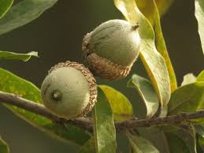
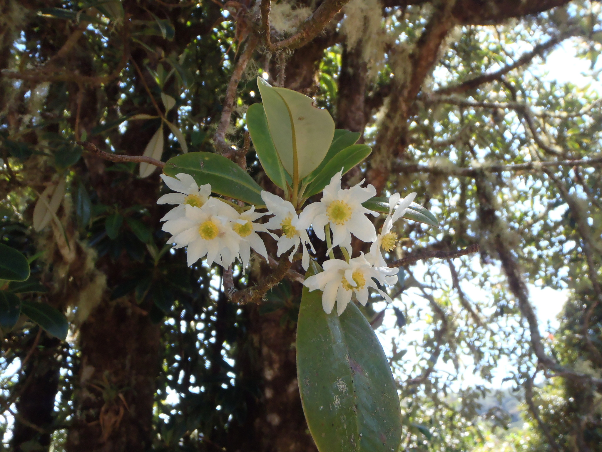
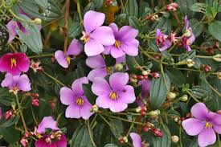
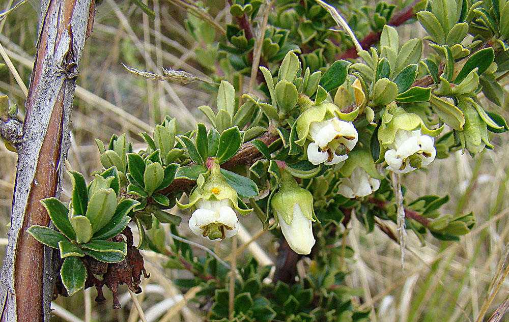
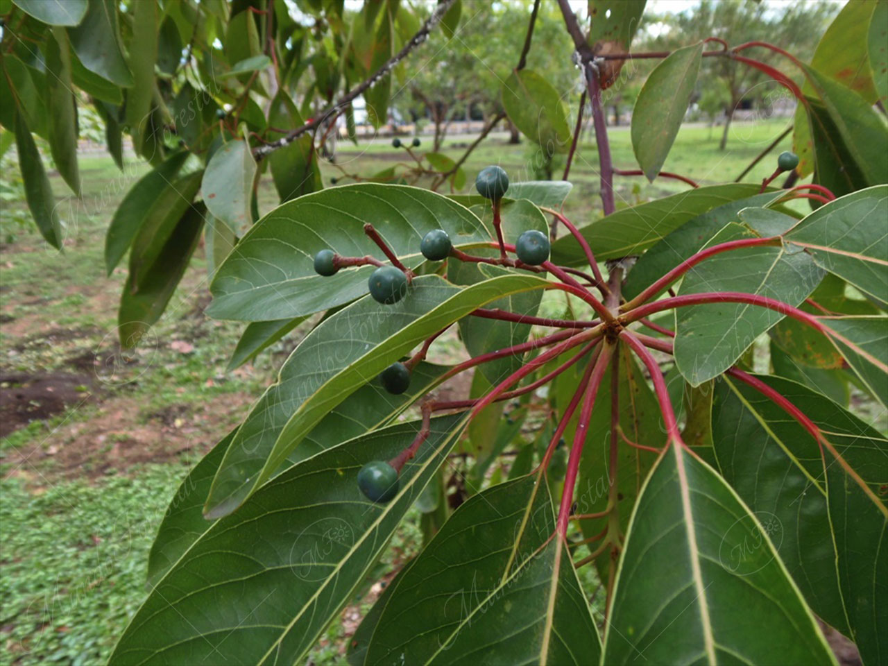
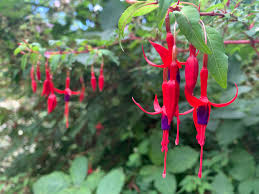
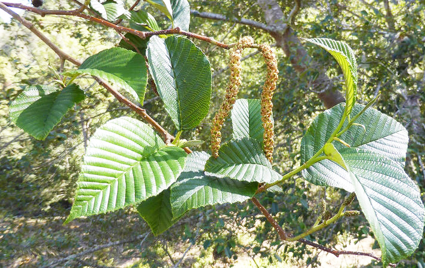

Flora de Boyacá
Explora la diversidad de plantas en la región de Boyacá.

Más información
Frailejón (Espeletia)
- Zona de Crecimiento:Páramos andinos.
- Características Especiales:Su estructura lanuda protege del frío extremo y retiene humedad.

Más información
Encenillo (Weinmannia tomentosa)
- Zona de Crecimiento:Bosques andinos de montaña.
- Características Especiales:Madera valiosa para restauración de hábitats degradados.

Más información
Arrayán (Myrcianthes leucoxyla)
- Zona de Crecimiento:Bosques montanos y andinos.
- Características Especiales:Atrae fauna con sus frutos, esencial para la dispersión de semillas.

Más información
Roble Andino (Quercus humboldtii)
- Zona de Crecimiento:Bosques húmedos montañosos.
- Características Especiales:Hogar para diversas especies y productor de madera robusta.

Más información
Canelo (Drimys granadensis)
- Zona de Crecimiento:Bosques de montaña.
- Características Especiales:Corteza con propiedades medicinales contra dolencias estomacales.

Más información
Siete Cueros (Tibouchina lepidota)
- Zona de Crecimiento:Bosques andinos.
- Características Especiales:Floración espectacular que embellece el paisaje natural.

Más información
Chite (Escallonia myrtilloides)
- Zona de Crecimiento:Alta montaña.
- Características Especiales:Resistente al frío, ideal para jardines de páramo.

Lulo de perro (Solanum vestissimum)
- Zona de Crecimiento:Zonas montañosas y bosques.
- Características Especiales:Frutos comestibles con valor culinario local.

Mortiño Andino (Vaccinium meridionale)
- Zona de Crecimiento:Bosques montanos y páramos.
- Características Especiales:Frutos antioxidantes usados en conservas y vinos.

Palma de Cera (Ceroxylon alpinum)
- Zona de Crecimiento:Alta montaña andina.
- Características Especiales:Hogar del loro orejiamarillo y símbolo nacional de conservación.

Más información
Aguacatillo (Persea caerulea)
- Zona de Crecimiento:Bosques montanos y andinos.
- Características Especiales:Frutos apreciados por la fauna local y madera usada en carpintería.

Más información
Chilco (Fuchsia magellanica)
- Zona de Crecimiento:Bosques templados y zonas de montaña.
- Características Especiales:Atrae polinizadores como colibríes con sus flores colgantes.

Más información
Aliso (Alnus acuminata)
- Zona de Crecimiento:Bosques y áreas degradadas.
- Características Especiales:Fija nitrógeno en el suelo, crucial para la reforestación.

Pino Colombiano (Podocarpus oleifolius)
- Zona de Crecimiento:Bosques neotropicales de alta montaña.
- Características Especiales:Resiliente y adaptativo, vital para conservación de bosques.

Uva Camarona (Macleania rupestris)
- Zona de Crecimiento:Bosques nublados de montaña.
- Características Especiales:Produce frutos comestibles y atractivos, usados en jaleas y mermeladas.